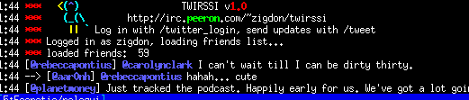

Twirssi allows you to post to Twitter
and Identi.ca from your
favorite IRC client, as well as:
- Read your friend feed, and your replies (from people on and not on your feed).
- Receive and send direct messages (DMs)
- Use multiple accounts, on either twitter or identi.ca - follow, read and post
- See the context when your friends reply to users you aren't following
Click here to download the current version. Current
development is mirrored in github.
A running twirssi install can be switched to use beta code by setting
twirssi_upgrade_beta to true, and using /twirssi_upgrade.
.
The script is written and maintained by @gedge, and @zigdon and the site and logo are by @relsqui. Try it out, leave comments, and
follow development by following @twirssi, or join #twirssi on Foonetic.